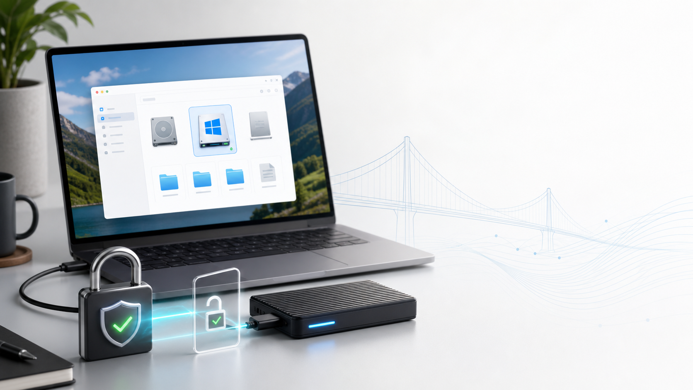

What It Solves
macOS cannot natively open BitLocker-encrypted Windows drives. BitBridge helps MacBook Air and MacBook Pro users on M1, M2, M3, and M4 access a Windows laptop SSD or external NVMe enclosure from Finder.
GUI setupChoose the external Microsoft Basic Data partition from a simple installer.
Keychain storageThe recovery key is stored in macOS Keychain, not in scripts or LaunchAgents.
Read-only mountThe default mount mode is read-only to protect the original Windows disk.
Requirements
- Apple Silicon Mac: M1, M2, M3, M4, or newer.
- macOS 13 Ventura or newer recommended.
anylinuxfsinstalled at/opt/homebrew/bin/anylinuxfs.- macOS tools:
diskutil,hdiutil,launchctl,security,osascript,sudo. - A valid BitLocker recovery key for the drive.
Open Source
Made by @MESBAHI.taha. Contributions are welcome for better dependency detection, native Swift UI, signed/notarized releases, localization, and safer multi-drive workflows.